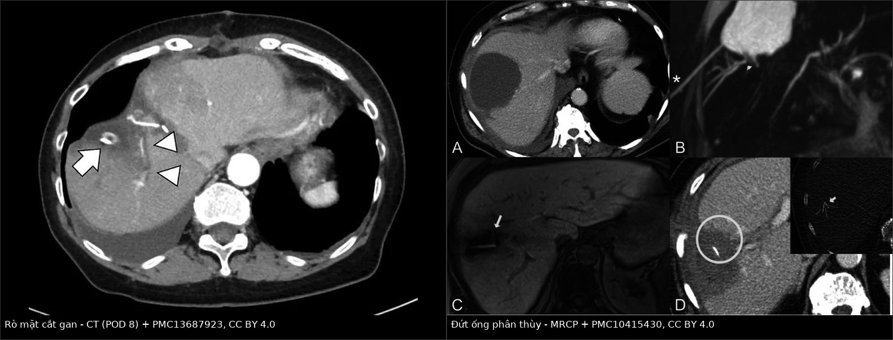
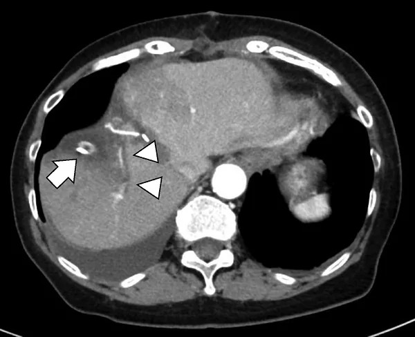
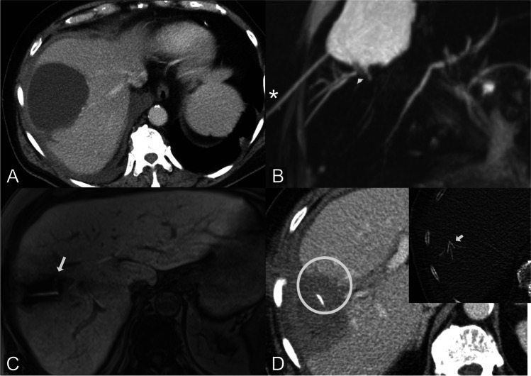

1814 — Rò mật sau cắt gan: ISGLS A/B/C, biloma – áp-xe – rò miệng nối, khi nào dẫn lưu / ERCP / mổ lại / Post-hepatectomy bile leak
Tags: pattern:ro-mat pattern:dich-tu-sau-mo pattern:biloma vung:gan vung:duong-mat score:ISGLS score:Clavien-Dindo protocol:CE-MRCP protocol:ERCP protocol:PTBD incidentaloma:biloma
Mức chắc chắn (certainty): tổng hợp y văn (literature synthesis) — số liệu lấy từ đồng thuận E-AHPBA–ESSO–Innsbruck 2025 (PMC12750329, CC BY 4.0), đoàn hệ 862 ca cắt gan về ảnh hưởng sống còn (PMC11599820, CC BY-NC 4.0), đoàn hệ 409 ca HCC về yếu tố nguy cơ (PMC10553327, CC BY 4.0), nghiên cứu 39 ca Gd-EOB-DTPA-MRCP (PMC10415430, CC BY 4.0), đoàn hệ 59 ca nội soi mật–tụy (PMC12151791, CC BY 4.0), đoàn hệ 107 ca miệng nối mật–ruột (PMC12513953, CC BY-NC-ND 4.0), loạt 24 ca PTBD (PMC13280318, CC BY 4.0) và một ca nguyên văn rò ống đứt hoàn toàn điều trị bằng EUS-TD (PMC13687923, CC BY 4.0).
Bài này trả lời câu hỏi hẹp hơn bài 108. 108 dạy tổn thương đường mật sau cắt túi mật (Strasberg–Bismuth); 107 dạy kỹ thuật MRCP/HBP; 133 dạy hẹp miệng nối sau ghép; 105 dạy chăm sóc ống PTBD; 137 dạy theo dõi stent. Sau cắt gan, cơ chế rò khác hẳn: mật thoát từ mặt cắt nhu mô hoặc ống phân thùy bị đứt, không phải từ một ống mật chính bị cắt nhầm. Vì vậy phân độ ISGLS — chứ không phải phân độ giải phẫu Strasberg — mới là thứ quyết định theo dõi, ERCP/PTBD hay mổ lại, và rò ống đứt hoàn toàn là nhóm ERCP thất bại điển hình.
1. Tổng quan bệnh học – cơ chế hình ảnh
- Định nghĩa ISGLS (International Study Group of Liver Surgery, 2011 — PMID 21316725): rò mật là nồng độ bilirubin trong dịch dẫn lưu ≥ 3 lần bilirubin huyết thanh từ ngày hậu phẫu thứ 3 trở đi, hoặc cần can thiệp vì tụ mật (biliary collection) hay viêm phúc mạc mật (biliary peritonitis). Ba độ: A — không phải đổi cách xử trí; B — phải đổi xử trí (dẫn lưu qua da, ERCP/stent) nhưng không mổ lại; C — phải mổ lại. "Rò có ý nghĩa lâm sàng" (clinically relevant) = B + C. Định nghĩa này được các bài mở nhắc lại nguyên văn (PMC13457801) và được đồng thuận châu Âu dùng làm ngôn ngữ chung (PMC12750329).
- Tần suất — con số phải nhớ: đồng thuận 2025 ghi 5–15%, cao hơn sau cắt gan quanh rốn gan (PMC12750329). Trong 862 ca cắt gan liên tiếp: rò mật 146 ca (16,9%), trong đó B/C 60 ca (7,0%); tử vong sau mổ 34 ca (3,9%) (PMC11599820). Trong 409 ca HCC không nối mật–ruột: 39 ca (9,5%), phân độ A 27 (69%) · B 12 (31%) · C 0; không có tử vong 90 ngày (PMC10553327).
- Tần suất theo vị trí u (tính lại từ bảng của PMC11599820): u quanh rốn gan (perihilar) 16/42 ≈ 38% so với u trong gan 18/69 ≈ 26% — đúng hướng "cao hơn sau cắt gan quanh rốn gan" mà đồng thuận nêu. Đây là lý do ung thư đường mật là nhóm phải cảnh giác nhất, không phải HCC.
- TẠI SAO rò xảy ra ở mặt cắt gan: mặt cắt nhu mô chứa hàng trăm ống mật nhỏ; ống < 1–2 mm chỉ được bịt bằng đông protein do đốt điện/sóng siêu âm, không bao giờ chắc như buộc chỉ. Bốn cơ chế: (1) đông tắc không kín ống nhỏ; (2) ống bị thiếu máu ở đầu cắt (huy động gan, Pringle kéo dài) → hoại tử muộn; (3) ống phân thùy lạc chỗ/bị đứt (hay gặp ống phân thùy phải sau, VI–VII, khi cắt phân thùy trước hoặc cắt gan phải); (4) miệng nối mật–ruột rò tại chỗ nối. Đồng thuận liệt kê đúng nhóm nguy cơ này: mổ lớn/phức tạp, cắt gan trung tâm (mesohepatectomy), tái cắt, cắt ống mật trung tâm, thời gian mổ, mất máu, Pringle (PMC12750329).
- Số liệu nguy cơ định lượng: mất máu trong mổ ≥ 370 mL → OR 2,25 (1,10–4,59); béo phì sarcopenia → OR 4,08 (1,37–12,1); ở nhóm cắt gan lần đầu chỉ béo phì sarcopenia còn độc lập (OR 3,61) (PMC10553327). Nghĩa là "mổ sạch, ít máu" là biện pháp dự phòng rò mạnh hơn mọi thứ khác.
- Vật lý — vì sao CT thường không gọi tên được "rò mật": mật có tỷ trọng 0–20 HU, gần như trùng dịch thanh mạc, dịch tụ sau mổ, nước tiểu và mủ loãng; chỉ máu tụ 35–70 HU mới tách được. Trên CT, biloma và nang thanh mạc/nang bạch mạch nhìn giống nhau. Vì vậy "chất cản quang" đáng tin nhất trong giai đoạn đầu không phải iod, mà là bilirubin trong dịch dẫn lưu — một xét nghiệm sinh hóa, không phải hình ảnh.
- TẠI SAO CE-MRCP nhìn được chỗ rò: gadoxetate (Gd-EOB-DTPA) được tế bào gan hấp thu rồi bài tiết vào lòng ống mật; trên MRCP T2 nặng, mật trong và ngoài ống đều sáng như nhau (nên chỉ cho hình thái), nhưng ở thì gan–mật 60–90 phút, chỉ mật mới sáng dần — chỗ sáng ngoài lòng ống chính là rò đang hoạt động. Trong 39 ca nghi rò (25 ca rò được xác nhận), đồng thuận liên đọc κ = 0,85 cho phát hiện và κ = 0,88 cho định vị; sau mổ, rò trung tâm 58%, ngoại vi 42%; ống lạc chỗ 8%, ống đứt hoàn toàn 26% (PMC10415430). Định vị đúng đổi độ phức tạp của can thiệp (rò trong nhu mô cần can thiệp ít phức tạp hơn, p = 0,002).
- TẠI SAO rò mật có thể chết người: mật là chất kích thích hóa học lên phúc mạc và là môi trường nuôi khuẩn; rò + ứ đọng → viêm phúc mạc mật, áp-xe, nhiễm khuẩn huyết, suy gan. Trong 107 ca miệng nối mật–ruột, rò 28%; tử vong 30 ngày 2,8%, 90 ngày 4,7%; rò độ C (viêm phúc mạc mật) là yếu tố độc lập của tử vong 90 ngày với OR 35,7 (3,07–416,5) (PMC12513953). Bài học: độ C không phải "rò nặng hơn một chút" — nó là một bệnh cảnh khác.
- TẠI SAO phải xử lý sớm cả khi bệnh nhân "ổn": ở 111 ca ung thư đường mật, rò mật 34 ca (30,6%) với A/B/C = 12/19/3; nhóm rò có DFS trung vị 9,9 vs 24,9 tháng (p = 0,013) và HR 1,896 sau hiệu chỉnh nguy cơ; chỉ 14,7% bệnh nhân có rò nhận hóa trị bổ trợ trong 4 tuần so với 35,1% ở nhóm không rò (PMC11599820). Rò mật cướp mất cửa sổ điều trị ung thư, không chỉ kéo dài nằm viện.
- Thời gian: phần lớn rò biểu hiện ngày 3–7; rò ống đứt/miệng nối có thể kéo dài hàng tuần đến hàng tháng — ca minh họa rút ống dẫn lưu ngày 66 và ra viện ngày 70 (PMC13687923).
2. Mẫu hình + chẩn đoán phân biệt theo vị trí (gamut)
- Bốn câu hỏi bắt buộc, theo đúng thứ tự:
- Lưu lượng bao nhiêu mL/24 giờ? (đồng thuận dùng > 100 mL mật/24 giờ làm ngưỡng "rò có ý nghĩa lâm sàng" để cân nhắc ERCP sớm — PMC12750329).
- Bilirubin dịch/serum bao nhiêu lần? (≥ 3 lần = rò theo ISGLS; 5–10 lần gợi ý rò từ ống lớn/đứt ống).
- Ống mật còn liên tục không? (câu trả lời quyết định ERCP có khả thi hay không).
- Có nhiễm trùng/áp-xe không? (sốt, khí trong tụ dịch, vách ngấm, cấy dịch).
- Mẫu hình 1 — rò mặt cắt gan "nhỏ": dịch dẫn lưu tăng vừa, bilirubin 3–10 lần, không có tụ dịch lớn, bệnh nhân không sốt. Đa số tự khỏi hoặc đáp ứng ERCP + stent; đây là nhóm ISGLS A/B điển hình.
- Mẫu hình 2 — rò ống phân thùy (peripheral leak): biloma cạnh mặt cắt, ống phân thùy không giãn hoặc giãn nhẹ, ERCP có thể không thấy ống rò nếu không làm balloon occlusion cholangiography. Nhóm này cần định vị bằng CE-MRCP trước khi can thiệp.
- Mẫu hình 3 — ống đứt hoàn toàn (completely disconnected duct): biloma dai dẳng, ERCP không qua được chỗ đứt, ống phân thùy không thông với cây mật chính. Đây là nhóm ERCP thất bại điển hình, cần PTBD, EUS-TD, ablasion đường rò hoặc mổ. Ca nguyên văn: ống phân thùy phải sau đứt hoàn toàn, đường kính chỉ 1,7 mm nên EUS-BD thất bại, phải EUS-TD dẫn lưu biloma nhiễm trùng (PMC13687923).
- Mẫu hình 4 — rò miệng nối mật–ruột: sau cắt gan quanh rốn gan/ghép gan; lưu lượng lớn, bilirubin rất cao, dễ viêm phúc mạc mật; về sau là hẹp miệng nối. Đây là nhóm ISGLS C hay gặp nhất và có tử vong cao (OR 35,7 — PMC12513953).
- Mẫu hình 5 — biloma nhiễm trùng/áp-xe: tụ dịch có khí, vách ngấm, bệnh nhân sốt/đau, cấy dịch dương (ca minh họa: Enterococcus faecium). Điều trị không chỉ dẫn lưu mật mà phải dẫn lưu ổ mủ + kháng sinh.
- Mẫu hình 6 — rò mật–da (biliary–cutaneous fistula): mật chảy qua vết mổ hoặc chân ống dẫn lưu; đường hầm thành lập, khó đóng; nguyên tắc là giảm áp lực trong ống mật (ERCP/stent/PTBD) để đường hầm tự đóng, không rút ống sớm.
- Mẫu hình 7 — máu thay mật (post-hepatectomy hemorrhage): dịch dẫn lưu ra máu đỏ, Hb tụt, 35–70 HU trên CT; không phải rò mật. Đừng đo bilirubin rồi kết luận rò trong khi bệnh nhân đang chảy máu.
- Gamut theo vị trí: mặt cắt gan phải (hay gặp nhất, ống phân thùy VI–VII) → rốn gan/miệng nối (rò miệng nối, hẹp muộn) → màng phổi (rò mật–màng phổi sau cắt gan trên cao, tràn dịch mật) → vết mổ/chân ống (rò mật–da).
- Gợi nhớ 4 chữ — OUT–RATIO–DUCT–SEPSIS: Output (mL/24h) · Ratio (bilirubin dịch/serum) · Duct (còn liên tục?) · Sepsis (áp-xe/viêm phúc mạc). Trả lời đủ 4 chữ là chọn được theo dõi, ERCP, PTBD hay mổ.
3. Bảng so sánh phân biệt (ma trận đối chiếu)
| Thực thể (entity) | Hình ảnh điển hình | Chốt vào (rule-in) | Chốt loại (rule-out) | Gợi ý xác nhận |
|---|---|---|---|---|
| ISGLS A — rò không đổi xử trí | Dịch dẫn lưu vàng mật, lượng ít; CT không có tụ dịch lớn; ống mật liên tục | Bilirubin dịch ≥ 3× serum từ ngày 3 + bệnh nhân không sốt, không đau, không tắc mật | Sốt/đau tăng + tụ dịch lớn → đã sang B | Đo bilirubin dịch mỗi 2–3 ngày; siêu âm/CT khi lâm sàng đổi |
| ISGLS B — phải đổi xử trí, không mổ lại | Biloma cạnh mặt cắt, ống mật còn liên tục; có thể hẹp nhẹ tại chỗ rò | Rò + cần dẫn lưu qua da hoặc ERCP/stent, không có viêm phúc mạc | Viêm phúc mạc mật, dịch tự do nhiều → C | CT có cản quang; ERCP balloon occlusion; PTBD nếu biloma không có ống |
| ISGLS C — phải mổ lại | Dịch tự do quanh gan/lách, dịch mức khí-dịch, bụng căng; có thể thiếu máu | Viêm phúc mạc mật + rò, hoặc rò không kiểm soát được bằng can thiệp | Rò khu trú, ổn định, đáp ứng dẫn lưu → B | CT bụng cấp; mổ lại + rửa phúc mạc; cấy mật |
| Ống đứt hoàn toàn (disconnected duct) | Biloma lớn, ống phân thùy giãn tách khỏi cây mật chính; ERCP không hiện hình ống bên tổn thương | ERCP balloon occlusion không thấy ống phân thùy + biloma dai dẳng + lưu lượng không giảm | Ống còn thông, chỉ rò mặt cắt → A/B | CE-MRCP/DIC-CT định vị; EUS-TD/PTBD/ablasion |
| Biloma vô khuẩn | Khối dịch 0–20 HU, bờ rõ, không khí, không vách ngấm, không ngấm thuốc | Dịch đồng nhất + không sốt + không khí | Có khí/vách ngấm/sốt → áp-xe | CT; cấy dịch âm tính; theo dõi ± dẫn lưu |
| Biloma nhiễm trùng/áp-xe | Tụ dịch khí, vách ngấm, dịch không đồng nhất, mỡ quanh viêm | Sốt + khí trong tụ dịch + vách ngấm, cấy dương | Dịch thuần nhất, không khí, không sốt → biloma vô khuẩn | CT có cản quang; cấy dịch; dẫn lưu + kháng sinh |
| Rò miệng nối mật–ruột | Tụ dịch/quầng thấm quanh miệng nối, khí trong ổ dịch, giãn đường mật trên miệng nối | Lưu lượng > 300 mL/ngày + sốt + bilirubin dịch rất cao sau cắt gan quanh rốn gan | Rò mặt cắt lượng vừa, không sốt, ống còn thông → A/B | CT; MRCP; ERCP/PTBD; nguy cơ viêm phúc mạc mật |
| Rò mật–da | Đường hầm từ mặt cắt ra da, mật chảy qua vết mổ/chân ống | Mật chảy ra da liên tục + hình ảnh đường hầm trên fistulography/CT | Dịch thanh mạc/nhiễm trùng vết mổ → không phải rò mật | Fistulography qua ống; ERCP/PTBD để giảm áp |
| Máu tụ/xuất huyết sau cắt gan (PHH) | Dịch 35–70 HU, có thể tăng đậm độ theo thời gian; Hb tụt, mạch nhanh | Dịch ra máu đỏ + Hb giảm + 35–70 HU | Dịch vàng mật 0–20 HU + bilirubin cao → rò mật | CT có cản quang thì động mạch; CTA/DSA nếu nghi giả phình |

Trái: CT có cản quang ngày 8 sau cắt phân thùy trước + cắt túi mật — tụ dịch lớn sát mặt cắt (mũi tên: ống dẫn lưu trong ổ dịch; đầu mũi tên: ống mật phân thùy sau giãn nhẹ, nằm sát ổ dịch). Phải: cùng bệnh cảnh "ống đứt" trên 4 chuỗi — (A) CT: biloma lớn; (B) T2-MRCP: biloma + ống phân thùy cụt; (C) thì gan–mật: thuốc thoát ra ngoài lòng ống; (D) CT sau đặt dẫn lưu trong biloma. Nguồn: DEN Open 2026 (PMC13687923) Fig. 1 và Eur Radiol 2023 (PMC10415430) Fig. 6, CC BY 4.0; ghép bằngtools/make_composite.py (letterbox, không crop/kéo giãn).
Ba dấu hiệu đọc kỹ trên hình
- "Ống không hiện hình" không phải "không có ống": trên ERCP thường, ống phân thùy đứt có thể không được bơm thuốc vì thuốc đi theo đường ít cản nhất xuống tá tràng. Phải dùng balloon occlusion cholangiography (bóng chặn ống mật chủ) rồi bơm ngược dòng — ca minh họa chẩn đoán đúng nhờ bước này (PMC13687923).
- Biloma + ống giãn khu trú = gợi ý ống đứt, không phải "nang dịch đơn thuần"; đo đường kính ống (ca: 1,7 mm) để tiên lượng khả năng can thiệp nội soi.
- Vị trí tụ dịch so với mặt cắt: sát mặt cắt + có ống dẫn lưu trong ổ → rò mặt cắt; quanh rốn gan/miệng nối → nghĩ rò miệng nối.
4. Protocol chụp + phân độ + sơ đồ xử trí
- Theo dõi sinh hóa (bắt buộc trước khi chụp): đo bilirubin dịch dẫn lưu song song bilirubin huyết thanh ngày 3 và 5; ghi lưu lượng mL/24h. Ngưỡng đồng thuận: > 100 mL mật/24h khi có ống dẫn lưu → ERCP + stent sớm; nếu biloma không có ống → dẫn lưu qua da trước, ERCP sau (PMC12750329).
- CT bụng có cản quang (3 thì): xác định vị trí/tính chất tụ dịch (đo HU), khí, vách ngấm, mạch máu (giả phình, huyết khối tĩnh mạch cửa), giãn đường mật. Đồng thuận không khuyến cáo CT/MR thường quy ở bệnh nhân nguy cơ cao nhưng không triệu chứng (conditional, mức bằng chứng 3); nhưng khi đã nghi rò thì ngưỡng chụp phải thấp.
- MRCP + CE-MRCP bằng gadoxetate: MRCP T2 nặng cho hình thái cây mật; thì gan–mật 60–90 phút cho vị trí rò hoạt động. Giá trị: κ 0,85–0,88, phân biệt trung tâm 58% / ngoại vi 42%, phát hiện ống lạc chỗ 8% / ống đứt 26% (PMC10415430). Chỉ định khi CT chưa trả lời "rò ở đâu" hoặc trước khi chọn can thiệp.
- ERCP: vừa chẩn đoán vừa điều trị. Bắt buộc balloon occlusion cholangiography; đặt stent nhựa 7–10 Fr ± cắt cơ Oddi. Số liệu 59 ca rò sau mổ gan–mật–tụy (23 cắt gan): độ A/B/C = 17/40/2; 37/40 ca độ B được dẫn lưu nội soi, 100% lành, thời gian dẫn lưu trung vị 18 ngày (13–35) (PMC12151791). Tuổi (UOR 1,09/1 tuổi) và số ngày từ mổ đến khi rò (UOR 1,18/ngày) dự báo độ nặng — rò xuất hiện muộn có xu hướng nặng hơn.
- PTBD: chỉ định khi ERCP thất bại, ống đứt hoàn toàn, hoặc biloma không có ống dẫn lưu. Loạt 24 ca: thành công kỹ thuật 100%; thành công lâm sàng 93,8% nếu PTBD là can thiệp đầu tay nhưng chỉ 14,3% nếu PTBD sau khi mổ lại thất bại (PMC13280318) — tức đừng để "mổ lại thất bại" rồi mới chuyển can thiệp.
- EUS-TD (dẫn lưu xuyên thành qua nội soi siêu âm): lựa chọn khi ERCP và EUS-BD đều thất bại vì ống không giãn; ca minh họa: đặt stent pigtail 7 Fr/7 cm + ống mũi 7,5 Fr qua đường hầm nội soi tạo, rút ống qua da ngày 66, ra viện ngày 70 (PMC13687923).
- Ba khuyến cáo "đừng" của đồng thuận 2025: (1) không dẫn lưu bụng thường quy sau cắt gan không biến chứng (khuyến cáo mạnh, mức 1+); (2) không đặt stent xuyên miệng nối thường quy — nếu đặt thì rút trong vòng 3 tháng; (3) không chụp CT/MR/SPECT thường quy ở người nguy cơ cao không triệu chứng (PMC12750329).
flowchart TD
A[Dịch dẫn lưu bất thường sau cắt gan] --> B{Bilirubin dịch >= 3 lần huyết thanh<br/>từ ngày 3 ?}
B -- Không --> C[Không phải rò mật theo ISGLS<br/>xét máu tụ 35-70 HU / dưỡng trấp / dịch thanh mạc]
B -- Có --> D[CT có cản quang + MRCP / CE-MRCP]
D --> E{Cần đổi xử trí ?}
E -- Không --> F[ISGLS A: theo dõi, đo bilirubin mỗi 2-3 ngày]
E -- Có, không mổ lại --> G[ISGLS B: ERCP + stent hoặc PTBD]
E -- Viêm phúc mạc mật --> H[ISGLS C: mổ lại + rửa phúc mạc]
D --> I{Ống mật còn liên tục ?}
I -- Đứt hoàn toàn --> J[PTBD / EUS-TD / ablasion đường rò / mổ]
G --> K{Biloma có ống dẫn lưu ?}
K -- Không --> L[Dẫn lưu qua da trước, ERCP sau]
K -- Có --> M[ERCP + stent, rút stent theo lịch]
5. Biến thể bình thường và cạm bẫy
- Cạm bẫy 1 — bilirubin dịch "thấp giả" do pha loãng: dịch dẫn lưu bị rửa/pha loãng hoặc lấy từ ống đã tắc cho bilirubin thấp, trong khi biloma vẫn đang rò. Ngược lại, bilirubin huyết thanh cao (suy gan, vàng da trước mổ) làm tỷ lệ < 3 dù rò thật. Luôn đọc tỷ lệ, kèm lưu lượng và hình ảnh, không dùng một con số tuyệt đối.
- Cạm bẫy 2 — tụ dịch "0–20 HU" không phải luôn là biloma: dịch thanh mạc, nang bạch mạch, nước tiểu (nếu có tổn thương niệu quản), dịch tụy đều cùng dải HU. Cần CE-MRCP hoặc đo bilirubin dịch chọc hút để chốt; đừng gọi "rò mật" chỉ vì có tụ dịch.
- Cạm bẫy 3 — ERCP "bình thường" ở bệnh nhân vẫn rò: nếu không làm balloon occlusion, ống phân thùy đứt không hiện hình và bác sĩ kết luận "không rò". Đây là lý do ca minh họa phải chuyển DIC-CT mới thấy đường rò từ ống phân thùy phải sau (PMC13687923).
- Cạm bẫy 4 — rò mặt cắt tự khỏi ≠ rò miệng nối: rò mặt cắt lưu lượng vừa, giảm dần; rò miệng nối lưu lượng lớn, không giảm, kèm sốt và đau — nhóm sau không được chờ, vì rò độ C có OR tử vong 35,7 (PMC12513953).
- Cạm bẫy 5 — bỏ sót nhiễm trùng ổ dịch: biloma "vô khuẩn" có thể bội nhiễm sau nhiều ngày (ca: E. faecium ở dịch dẫn lưu). Sốt mới + khí trong ổ dịch = chụp lại và cấy dịch, không chỉ tăng kháng sinh mù.
- Cạm bẫy 6 — rút ống dẫn lưu quá sớm: rút khi lưu lượng còn nhiều hoặc chưa kiểm tra đường rò → rò mật–da dai dẳng, phải đặt lại ống/PTBD. Nguyên tắc: giảm áp lực trong ống mật trước, rút ống sau khi lưu lượng giảm và hình ảnh hết tụ dịch.
- Cạm bẫy 7 — nhầm máu với mật: dịch ra máu đỏ, Hb tụt, 35–70 HU = xuất huyết sau cắt gan, không phải rò mật; xử trí là CTA/DSA ± nút mạch, không phải ERCP.
6. Tự lượng giá — Blind Quiz
Ca 1 — Nữ 78 tuổi, cắt phân thùy trước + cắt túi mật vì HCC tái phát. Ngày 3 dịch dẫn lưu vàng, bilirubin dịch 20,3 mg/dL; ngày 8 sốt, CT dưới đây. Nhìn ảnh trước, mô tả rồi trả lời.

- Hỏi: (1) Có phải rò mật theo ISGLS không, độ mấy? (2) Ống mật nào bị tổn thương? (3) Bước tiếp theo và vì sao ERCP có thể thất bại?
Bấm để hiện đáp án
- Có rò mật: bilirubin dịch 20,3 mg/dL cao hơn nhiều lần huyết thanh, xuất hiện từ ngày 3 → đúng định nghĩa ISGLS. Bệnh nhân sốt + dịch nhiễm E. faecium và cần dẫn lưu/kháng sinh → độ B, kèm biloma nhiễm trùng.
- Trên CT: tụ dịch lớn sát mặt cắt (mũi tên = ống dẫn lưu trong ổ dịch), ống mật phân thùy sau giãn nhẹ (đầu mũi tên) nằm sát ổ dịch → nghi rò từ ống phân thùy phải sau.
- Bước tiếp: ERCP có balloon occlusion để chẩn đoán; nếu không qua được chỗ đứt → DIC-CT/MRCP định vị, rồi PTBD/EUS-TD. Ca thật: ERCP ngày 9 cho thấy đứt hoàn toàn ống gan phải, EUS-BD thất bại vì ống chỉ 1,7 mm, nên EUS-TD dẫn lưu biloma ngày 24; rút ống qua da ngày 66, ra viện ngày 70.
- Nguồn: DEN Open 2026 (PMC13687923), CC BY 4.0.
Ca 2 — Bệnh nhân sau bóc u gan (enucleation) vì di căn đại trực tràng, có biloma. Xem 4 chuỗi ảnh dưới đây và trả lời.

- Hỏi: (1) Ảnh nào chứng minh rò đang hoạt động? (2) Vì sao T2-MRCP một mình không đủ? (3) Can thiệp nên nhắm vào đâu?
Bấm để hiện đáp án
- (A) CT: biloma lớn sau bóc u. (B) T2-MRCP: biloma + ống phân thùy cụt (đầu mũi tên) — chỉ cho hình thái, vì mật trong và ngoài ống đều sáng. (C) Thì gan–mật 60–90 phút: thuốc thoát ra ngoài lòng ống (mũi tên) = rò hoạt động, đây là ảnh chốt. (D) CT sau dẫn lưu: đầu ống trong biloma.
- T2-MRCP không phân biệt mật trong ống với dịch ngoài ống; chỉ gadoxetate bài tiết vào mật mới đánh dấu được dòng mật thoát ra.
- Can thiệp nhắm đúng ống phân thùy bị đứt (hoặc biloma nếu ống không can thiệp được): ERCP + stent nếu còn thông, PTBD/EUS-TD/ablasion nếu đứt hoàn toàn.
- Nguồn: Eur Radiol 2023 (PMC10415430), CC BY 4.0.
Ca 3 — Sau cắt gan quanh rốn gan có nối mật–ruột, ngày 3 dịch dẫn lưu 350 mL/ngày, bilirubin dịch 12 lần huyết thanh, bệnh nhân sốt 38,8 °C, bụng gồng. Chưa cần ảnh: quyết định gì trước tiên?
Bấm để hiện đáp án
- Rò miệng nối mật–ruột, nghi viêm phúc mạc mật — lưu lượng > 300 mL/ngày, bilirubin 12 lần, sốt + bụng gồng. Đây không phải "rò mặt cắt chờ tự khỏi".
- Hành động: CT bụng có cản quang khẩn (dịch tự do, khí, tụ dịch quanh miệng nối) + cấy máu/dịch + kháng sinh. Nếu viêm phúc mạc mật → ISGLS C, mổ lại; nếu ổ dịch khu trú, bệnh nhân ổn → PTBD/ERCP và theo dõi sát.
- Vì sao khẩn: trong đoàn hệ 107 ca miệng nối mật–ruột, rò độ C là yếu tố độc lập của tử vong 90 ngày, OR 35,7 (3,07–416,5); rò 28%, tử vong 90 ngày 4,7%.
- Nguồn: Langenbecks Arch Surg 2025 (PMC12513953), CC BY-NC-ND 4.0; định nghĩa độ theo ISGLS (PMID 21316725).
Bài liên quan chéo
- 100 – Tổng quan hệ Bụng
- 108 – Tổn thương đường mật sau cắt túi mật (Strasberg–Bismuth)
- 107 – MRCP & gadoxetic acid thì gan–mật
- 133 – Hẹp miệng nối & cholangiopathy sau ghép gan
- 105 – Theo dõi ống dẫn lưu mật qua da (PTBD)
- 137 – Theo dõi stent/dẫn lưu đường mật
- 179 – Hoại tử ống mật sau can thiệp u gan
Không dùng để chẩn đoán độc lập khi chưa có người hướng dẫn.